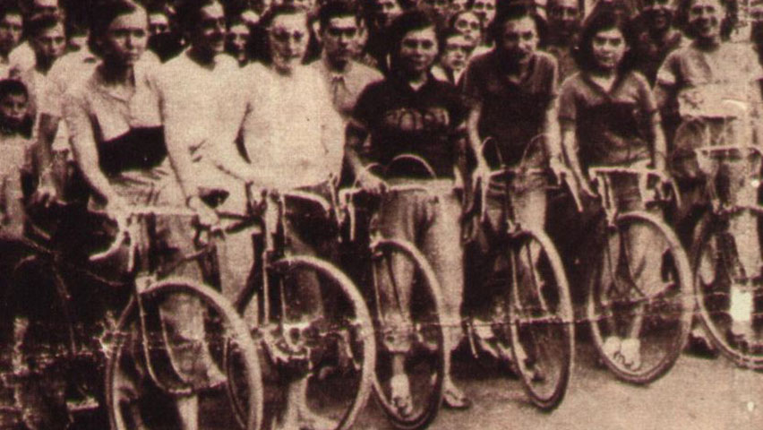

Historia Del Ciclismo
De las primeras pruebas al profesionalismo
La primera prueba ciclista de la historia a modo competitivo registrada se disputó el 31 de mayo de 1868 en un pequeño circuito de 1200 metros en el parque de Saint-Cloud, a las afueras de París, en la que participaron 7 ciclistas y fue ganada por el expatriado británico James Moore1 con una bicicleta de madera de piñón fijo y ruedas de hierro.2 Un año después se disputó la primera carrera propiamente dicha, concretamente el 7 de noviembre de 1869, entre París y Rouen. En ella participaron un centenar de ciclistas con el objetivo de culminar o ganar la prueba consistente en 123 km. Finalmente la lograron acabar 33. De nuevo británico James Moore ganó la prueba con un tiempo de 10 horas y 45 minutos. La intención de los organizadores fue demostrar que la bicicleta valía como medio de transporte para largas distancias.3
Primeras organizaciones ciclistas
Las primeras asociaciones ciclistas se crearon en Florencia (Italia) el 15 de enero de 1870 y en Holanda en 1871 y posteriormente en Gran Bretaña y en España (Sociedad Velocipedista Madrileña y el Club Velocipédico de Cádiz) en 1878 pero fueron asociaciones humildes de pequeños clubs. La primera asociación nacional fue la francesa en 1881 que creó el primer campeonato francés de ciclismo. Paul Masson y Léon Flameng, dos de los primeros ciclistas profesionales. En 1892 se creó la International Cycling Association (ICA) (Asociación Internacional de Ciclistas) en Londres, creada por un profesor de Inglés llamado Henry Sturmey, el fundador de Sturmey-Archer, siendo la primera asociación internacional de ciclismo, Se inauguró en 1893 y celebró su primer campeonato del mundo en Chicago, Estados Unidos, el mismo año. Pero divergencias entre los países que la formaban produjo que el 14 de abril de 1900 (durante los Juegos Olímpicos de París) se crease la Union Cycliste Internationale (UCI), (Unión Ciclista Internacional) actual organismo rector, fundado en París. Los integraron las federaciones nacionales de Francia, Bélgica, Estados Unidos, Italia y Suiza. Gran Bretaña no fue inicialmente un miembro, pero se unió en 1903. En España el primer organismo ciclista nacional fue la Unión Velocipédica Española creada en 1895.